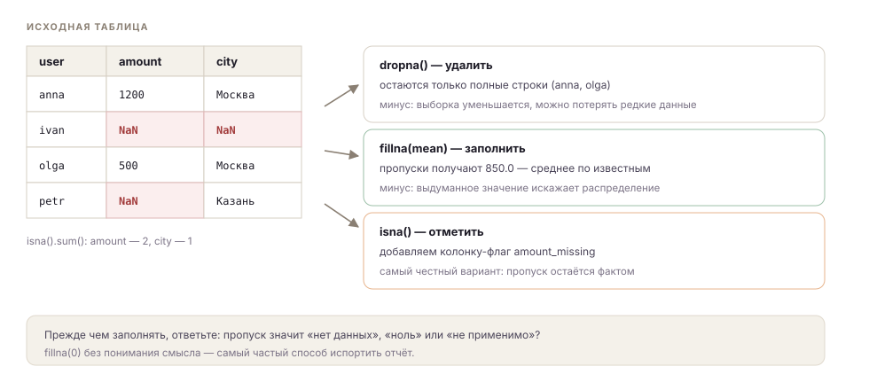

Пропуски: NaN, None и pd.NA Отсутствие данных — это факт, а не ноль
Реальные таблицы почти всегда с дырками. Вопрос не «как их заполнить», а «что они значат». Неизвестная зарплата, нулевая зарплата и неприменимая зарплата — три разные вещи, и от ответа зависит вся аналитика.
Словарь главы — если забыли термины
- NaN
- Float-значение «не число», стандартный пропуск в числовых колонках.
- pd.NA
- Единый пропуск для nullable-типов:
Int64,boolean,string. - nullable-тип
- Тип, который хранит и значения, и пропуск:
Int64вместоint64. - dropna
- Удалить строки с пропусками (можно только по subset колонок).
- fillna
- Заполнить пропуски значением; смысл значения — на ответственности аналитика.
- ffill / bfill
- Протянуть последнее/следующее известное значение вперёд или назад.
01Зачем это backend-разработчику
- Реальные данные грязные: пустые поля в CSV, NULL из базы, отсутствующие ответы API.
- Аналитика ломается тихо: среднее с NaN может дать NaN,
fillna(0)занижает среднее,dropna()выкидывает половину данных. - Прямой мост в SQL:
isna()—IS NULL,fillna—COALESCE,count—COUNT(col). - Собеседование: «как обработать пропуски», «чем
countотличается отsize», «почемуfillna(0)— плохая идея».
02Ассоциация-якорь: дырка, а не ноль
Пропуск — это дырка в таблице. Её можно закрыть (заполнить), можно признать и обойти (удалить строку), можно оставить и отметить флагом.
Но нельзя считать дырку нулём по умолчанию. Средняя зарплата по отделу не станет ниже оттого, что у одного сотрудника данных нет.
03Ассоциативный ряд: восемь звеньев
- NaNfloat-«не число»
- Noneпитоновский None в object
- pd.NAединый пропуск для nullable-типов (с pandas 1.0)
- isnaмаска пропусков
- countнепустые значения
- dropnaудалить строки
- fillnaзаполнить
- ffill / bfillпротянуть соседним значением
04Схема: три стратегии

05Как это устроено на самом деле
В pandas пропуски представлены несколькими способами. np.nan — это float,
поэтому числовая колонка с одним NaN становится float64, даже если значения
целые. В pandas 3 строковые колонки получают dtype str, а
None нормализуется в NaN; object
остаётся для смешанных колонок. pd.NA — единый
«пропуск» для nullable-типов (Int64, boolean,
string).
| Операция | Что делает | Риск |
|---|---|---|
| isna() / notna() | маска пропусков | нет |
| count() | непустые значения | несравнимо с size |
| dropna() | удалить строки | потеря данных |
| fillna(x) | заменить пропуски | искажение распределения |
| ffill()/bfill() | взять соседнее значение | данные из будущего/прошлого |
| astype("Int64") | nullable-тип | нужна явность |
Почему mean обычно не даёт NaN — и когда всё-таки даёт
df["amount"].mean() по умолчанию пропускает NaN и считает по известным
(skipna=True), но ручные вычисления через NumPy без этого флага дадут NaN.
Всегда полезно проверить, сколько значений реально участвовало: count().
Заполнение меняет тип
Если в целочисленной колонке есть NaN, она уже float64.
fillna(0) не вернёт int — значения останутся дробными. Для честных целых
с пропусками используют Int64.
06Лаборатория: запустить и увидеть
Фрагменты файла из папки guide/snippets: 17_missing_lab.py.
Шаг 1. Три вида пропусков
import numpy as np import pandas as pd print(repr(np.nan), type(np.nan).__name__) print(repr(None), type(None).__name__) print(repr(pd.NA), type(pd.NA).__name__)
Шаг 2. isna и count против size
df = pd.DataFrame({
"user": ["anna", "ivan", "olga", "petr"],
"amount": [1200, np.nan, 500, np.nan],
"city": ["Москва", None, "Москва", "Казань"],
})
print(df.isna().sum())
print(len(df), df.count().tolist())
Шаг 3. dropna
print(df.dropna()) # все колонки должны быть заполнены print(df.dropna(subset=["amount"])) # только по amount
Шаг 4. fillna и типы
print(df["amount"].fillna(df["amount"].mean())) print(df["amount"].fillna(0)) print(df["amount"].fillna(0).dtype)
Шаг 5. ffill и bfill
print(df["amount"].ffill()) # протянуть вперёд print(df["amount"].bfill()) # протянуть назад
Обратите внимание: у bfill последний пропуск остался — после него нет значения,
которое можно протянуть. Это не ошибка, а граница метода.
Шаг 6. Nullable-типы
amount_int = df["amount"].astype("Int64")
print(amount_int.dtype, amount_int.tolist())
print(amount_int.isna().tolist())
Int64 (с большой буквы) — nullable-тип: остаётся целым и при этом хранит
<NA>. Это удобнее, чем «всё стало float из-за одного пропуска».
Шаг 7. Пропуск как признак
df["amount_missing"] = df["amount"].isna() print(df[["user", "amount", "amount_missing"]])
Часто самый правильный вариант: не заполнять, а добавить флаг. Пропуск может быть сигналом (клиент не указал доход, датчик не сработал) — и этот сигнал ценен.
Шаг 8. groupby и NaN в ключе
print(df.groupby("city").size())
print(df.groupby("city", dropna=False).size())
07Мост: NULL в SQL и COALESCE
Прямые соответствия
SELECT COUNT(*) FROM orders; -- size: все строки SELECT COUNT(amount) FROM orders; -- count: только непустые SELECT * FROM orders WHERE amount IS NULL; SELECT COALESCE(amount, 0) FROM orders; -- fillna(0) SELECT AVG(amount) FROM orders; -- NaN пропускается автоматически
Почему это важно для отчётов
COUNT(*) и COUNT(col) дают разные числа —
ровно как size() и count(). Если в отчёте
«средняя сумма» считается через SUM/COUNT, важно, какой COUNT использован.
Пропуск и NULL — одна идея
В SQL NULL тоже не равен сам себе, и сравнение с ним даёт UNKNOWN.
В главах 20 и 22 это станет отдельной темой — но привычка «отсутствие — это не значение»
формируется здесь.
08Шесть ошибок, на которых спотыкаются
Неизвестная зарплата становится нулевой и тянет вниз среднее и суммы.
df["amount"] == np.nan всегда False.
isna() / notna().Колонка была float64 из-за NaN и осталась дробной.
Int64 или явное приведение после решения о пропусках.Удаляет строку, если пропуск есть в любой колонке — можно потерять почти всё.
subset=["amount"] и осознанный how.Метод протягивает соседнее значение, но данные должны быть отсортированы по времени, иначе «сосед» случайный.
sort_values("date") перед fill.По умолчанию группа с NaN исчезает из результата.
dropna=False, если пропуск — отдельная категория.09Вопросы с собеседования
Как работают NaN, None и pd.NA?
NaN — float-значение «не число», None — Python-объект, pd.NA — единый пропуск для nullable-типов. pandas через isna() распознаёт все три.
Чем isna() отличается от сравнения с None?
isna() — маска для всех видов пропусков; == None может не сработать для NaN, а для object-колонок ведёт себя непредсказуемо.
Как удалить дубликаты?
df.drop_duplicates() (все колонки) или subset=["email"]; keep="first"|"last"|False. Это задача главы 03, но здесь она встречается с пропусками.
Как получить top-N строк?
df.nlargest(3, "amount") или sort_values("amount", ascending=False).head(3).
Чем count() отличается от size()?
count считает непустые значения колонки, size — число строк группы или таблицы.
Как обработать пропуски без потери данных?
Добавить флаг isna, заполнить осмысленным значением (средним, медианой, прошлым) или использовать nullable-типы, сохраняя пропуск как <NA>.
Что происходит с NaN при groupby?
Строки с NaN в ключе отбрасываются по умолчанию; dropna=False оставляет их отдельной группой.
Почему среднее иногда «не считается»?
Если все значения пропущены — среднее NaN. Если часть — mean пропускает NaN по умолчанию, но число наблюдений меньше, чем строк.
10Три задачи: сначала своя попытка
01 Портрет пропусков
Для таблицы выведите число и долю пропусков по каждой колонке.
Показать решение
print(df.isna().sum()) print((df.isna().mean() * 100).round(1))
Что важно. isna().mean() — доля пропусков, потому что bool — это 0/1.
02 Заполнить осмысленно
Заполните пропуски в amount медианой, а city — значением «неизвестно». Сохраните флаг пропуска.
Показать решение
df["amount_missing"] = df["amount"].isna()
df["amount"] = df["amount"].fillna(df["amount"].median())
df["city"] = df["city"].fillna("неизвестно")
Что важно. Флаг создаётся до заполнения, иначе информация потеряется.
03 Целые с пропусками
Сделайте так, чтобы amount остался целочисленным, но пропуски не превратились в 0.
Показать решение
df["amount"] = df["amount"].astype("Int64")
Что важно. Int64 хранит и целые, и <NA>.
Обычный int64 пропуски не умеет.